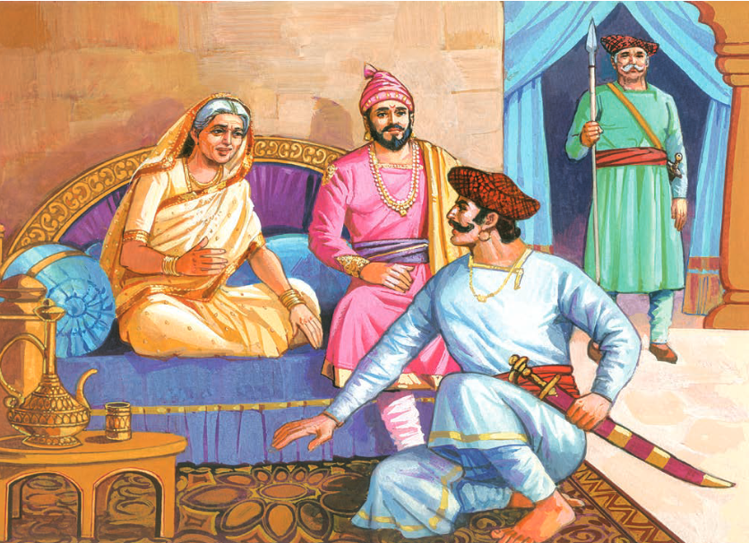

THE FORT IS WON, BUT THE LION IS GONE
Once upon a time, in the heart of the Deccan Plateau, there stood a
formidable fortress known as Raigad. Perched atop a rugged hill, its
towering walls and imposing gates struck fear into the hearts of those
who dared to challenge its sovereignty. At the helm of this fortress
was the legendary Maratha king, Shivaji Maharaj, whose bravery and
cunning had earned him the title of Chhatrapati, the emperor of the
Maratha Empire.

One fateful day, Raigad came under siege by the mighty Mughal forces,
led by the formidable Aurangzeb. Determined to crush the spirit of the
Marathas and expand his empire, Aurangzeb launched a relentless assault
on the fortress, throwing wave after wave of soldiers against its walls.
Despite being outnumbered and outmatched, the defenders of Raigad fought
with unwavering courage and tenacity. Led by Shivaji's trusted generals,
they repelled every attack with skill and determination, refusing to
yield even in the face of overwhelming odds. As the siege dragged on,
the Mughal forces grew increasingly desperate, resorting to cunning
tactics and treachery in their bid to breach the fortress walls. But the
defenders remained vigilant, thwarting every attempt with valor and
ingenuity.

Finally, after months of relentless fighting, the Mughal forces
managed to breach Raigad's defenses and overrun the fortress. But as
they stormed into the heart of the stronghold, they were met with an
unexpected sight—Shivaji Maharaj was nowhere to be found. In a daring
act of cunning, Shivaji had slipped away from Raigad under the cover
of darkness, leaving behind only a message for his enemies: "The fort
is won, but the lion is gone." Though Raigad had fallen, the spirit of
the Marathas remained unbroken, ready to rise again and reclaim their
sovereignty under the leadership of their beloved king. And so, the
story of Raigad's fall became a testament to the resilience and
indomitable spirit of the Maratha people, inspiring future generations
to never surrender in the face of adversity.
VIDEO